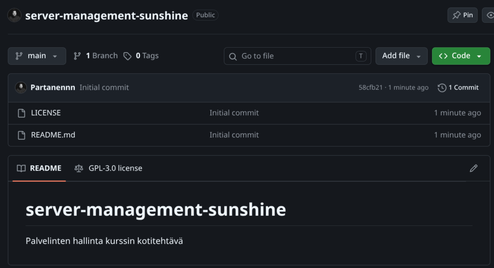
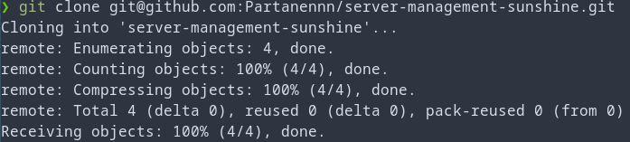
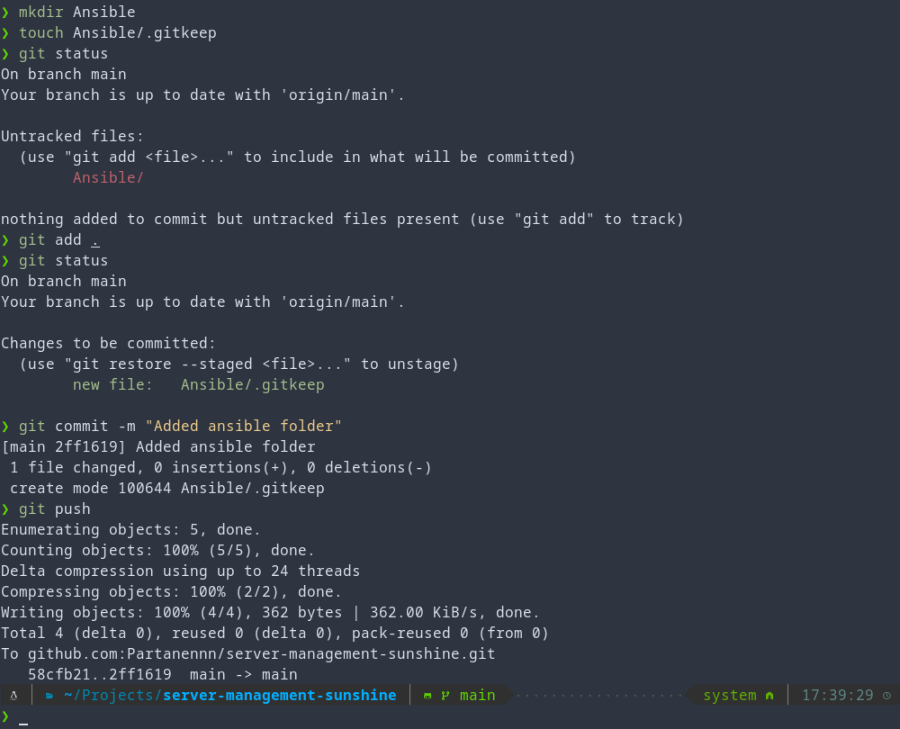
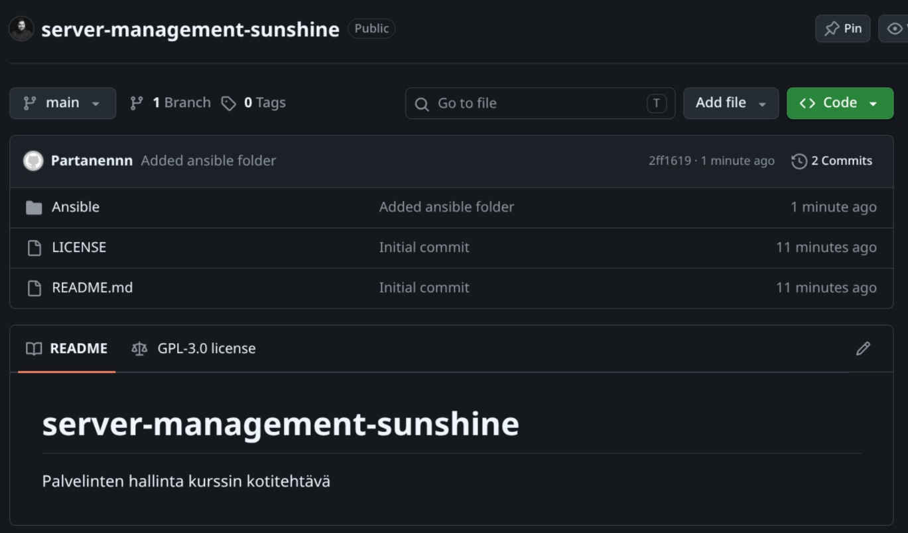
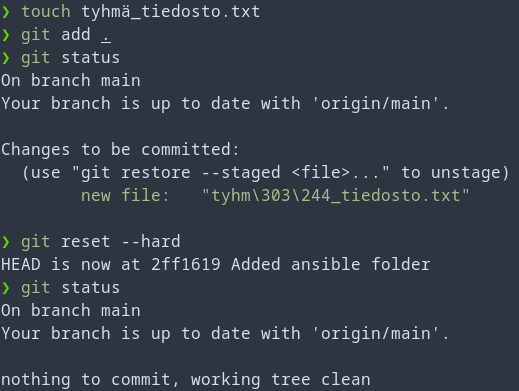
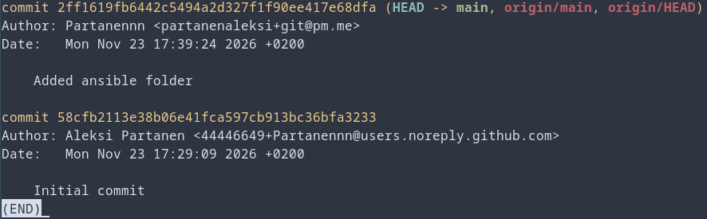
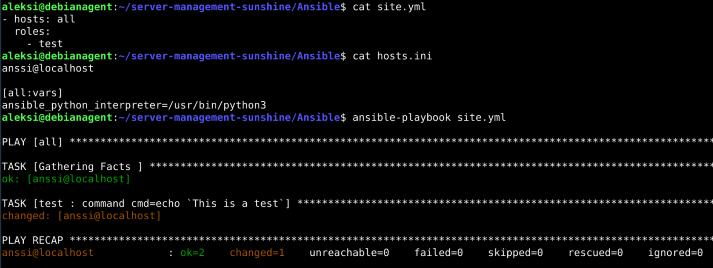

Host laitteisto
- Prosessori: AMD Ryzen 9 5900x 12-Core
- Keskusmuisti: 32GB DDR4
- Näytönohjain: NVIDIA GeForce RTX 3080
- OS: Linux 7.2.11-1-cachyos x86-64
Virtuaalikone, local
- 4 CPU
- 6GB RAM
- 20GB
- Debian 13, 64-bit
Harjoitus 5: Gitar Hero (Karvinen 2026a)
x) Tiivistelmä
Chacon and Straub 2014 (Chacon and Straub 2014)
- Git tallentaa tilannekuvia(snapshots) tiedostoista ja niiden tilasta.
- Git ei tallenna tiedostoa uudestaan, vaan tekee linkkauksen tiedostoon, jos tiedostossa ei ole uusia muutoksia.
- Git ajattelee dataa tilannekuvien virtana.
- Suurin osa Gitin operaatioista tapahtuu paikallisesti.
- SHA-1 tiivistetä käytetään Gitin tarkistussummana. Tämän avulla Git tietää aina kaikista muutoksista tiedostoissa, eikä niitä voi muokata ilman että Git huomaa sen.
- Git pääasiallisesti vain lisää dataa, hyvin harvoin poistaa mitään.
a) Online (Karvinen 2026a)
Tein uuden varaston Githubiin nimellä server-management-sunshine ja valitsin GNU General Public License v3.0 lisenssin.

b) Dolly (Karvien 2026a)
Kloonasin varaston koneelleni.

Tein varastoon kansion Ansible, lisäsin tiedoston .gitkeep ja puskin ne remoteen.


c) Doh! (Karvinen 2026a)
2ff1619fb6442c5494a2d327f1f90ee417e68dfaa
58cfb2113e38b06e41fca597cb913bc36bfa3233 Lisäsin teksti tiedoston
gittiin komennoilla touch tyhmä_tiedosto.txt ja
git add .. Tiedosto näkyi lisättynä komennolla
git status. git reset --hard(Karvinen 2026a)
poisti kaikki gittiin lisätyt muutokset, tässä tapauksessa uuden
tiedoston. Komentoa ei saa peruttua.

d) Tukki (Karvinen 2026a)
Komennolla git log näkee jokaisen commitin. Commitista
näkee mm. kuka sen on tehnyt, milloin ja mitä commitille on lisätty
lisätietoihin. Komennolla myös näkee, että missä commitissa
etä(remote) version haarat ovat menossa ja mikä on paikallisen gitin
valittu haara, ja missä commitissa se on menossa.

Huomasin myös, että nimenä oli Github käyttäjätunnus, eikä nimeni.
Muutin gitin käyttämään oletuksena nimenäni oikeaa nimeäni komennolla
git clone --global user.name "Aleksi Partanen".
e) Gitanbile (Karvinen 2026a)
Tein Ansible-kansion jo aiemmin. Lisäsin sinne hosts.ini, site.yml sekä ansible.cfg tiedostot. Lisäsin myös test roolin. Älysin myös tässä vaiheessa, että näiden ajamista varten tarvitsin Ansiblen, joten siirryin virtuaalikoneeseen. Siellä oli jo valmiiksi anssi-käyttäjä, jota käytin hosts.ini tiedostossa käyttäjänä.

f) Hae pari projektiin (Karvinen 2026a)
Löysin Moodlesta parin haku ilmoituksen, josta löysin itselleni parin projektityöhön.
Tehtävänanto (Karvinen 2026a)
-
x) Lue ja tiivistä. (Tässä x-alakohdassa ei tarvitse tehdä testejä
tietokoneella, vain lukeminen tai kuunteleminen ja tiivistelmä
riittää. Tiivistämiseen riittää muutama ranskalainen viiva.
Kannattaa lisätä mukaan myös jokin oma havainto, idea tai kysymys.)
- Chacon and Straub 2014: Pro Git, 2ed: 1.3 Getting Started - What is Git?.
- Gitin käyttö on lähinnä 'git add --all && git commit; git pull && git push'. Selitä tuon komennon jokainen osa. Käytä apuna itse valitsemiasi lähteitä ja viittaa niihin.
- a) Online. Tee uusi varasto GitHubiin (tai Gitlabiin tai mihin vain vastaavaan palveluun). Varaston nimessä ja lyhyessä kuvauksessa tulee olla sana "sunshine". Aiemmin tehty varasto ei kelpaa. (Muista tehdä varastoon tiedostoja luomisvaiheessa, esim README.md ja GNU General Public License 3) Edistyneemmille voi olla hauskaa etsiä ja kokeilla jokin muu palvelu kuin Github.
- b) Dolly. Kloonaa edellisessä kohdassa tehty uusi varasto itsellesi, tee muutoksia omalla koneella, puske ne palvelimelle, ja näytä, että ne ilmestyvät weppiliittymään.
- c) Doh! Tee tyhmä muutos gittiin, älä tee commit:tia. Tuhoa huonot muutokset ‘git reset --hard’. Huomaa, että tässä toiminnossa ei ole peruutusnappia.
- d) Tukki. Tarkastele ja selitä varastosi lokia. Näytä myös, mitä muutoksia tiedostoihin on tehty. Tarkista, että nimesi ja sähköpostiosoitteesi näkyy haluamallasi tavalla ja korjaa tarvittaessa.
- e) Gitanbile. Laita Ansible-kansio versionhallintaan. Tee jokin muutos, aja ansiblella, tallenna versio (commit).
- f) Hae pari projektiin Moodlen keskustelusta. (Tästä alakohdasta f ei tarvitse tehdä vaiheittaista teknistä raporttia, riittää kun toteat, että pari on hankittu. Pasilan ryhmä haki parin jo edellisessä tehtävässä, joten tämä on online-ryhmälle -3017.)
- g) Vapaaehtoinen: Se toinen järjestelmä: kokeile Gittiä eri käyttöjärjestelmällä kuin sillä, millä teit muut harjoitukset. Selitä niin, että kyseistä järjestelmää osaamatonkin onnistuu. Mahdollisuuksia on runsaasti: Debian, Fedora, Windows, OSX...
- h) Vapaaehtoinen: yhteistyötä: anna kaverillesi (tai alter egollesi) oikeus kirjoittaa varastoosi (commit access). Tehkää molemmat muutoksia varastoon gitillä.
Lähteet
- Karvinen, Tero 2026a. h5 Gitar Hero. Luettavissa: https://terokarvinen.com/palvelinten-hallinta/#h5-gitar-hero. Luettu: 23.11.2026
- Chacon and Straub, 2014. Pro Git, 2ed: 1.3 Getting Started - What is Git? Luettavissa: https://git-scm.com/book/en/v2/Getting-Started-What-is-Git%3F. Luettu: 23.11.2026